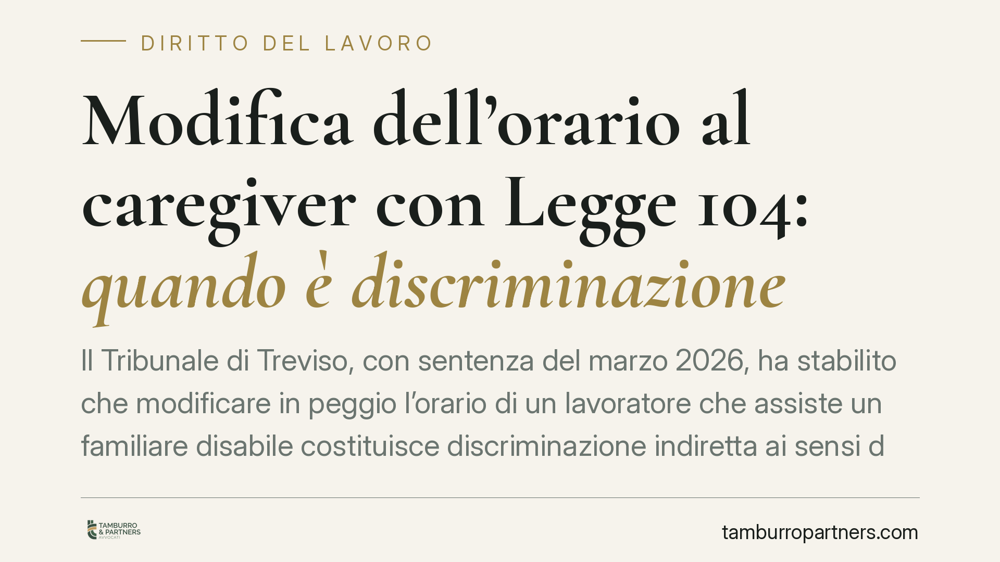

Modifica dell'orario al caregiver con Legge 104: quando è discriminazione
Il Tribunale di Treviso, con sentenza del marzo 2026, ha stabilito che modificare in peggio l'orario di un lavoratore che assiste un familiare disabile costituisce discriminazione indiretta ai sensi della Legge 104/1992. L'azienda è stata condannata a ripristinare l'orario e a risarcire il danno. Una pronuncia che ridefinisce i limiti del potere organizzativo datoriale di fronte alle esigenze di cura.

Il caso
Un lavoratore assisteva il figlio minore, affetto da patologia oncologica, avvalendosi delle tutele previste dalla Legge 104/1992. L'azienda ha modificato in senso peggiorativo l'articolazione del suo orario, rendendo di fatto più difficile la conciliazione tra attività lavorativa e assistenza al familiare.
Il Tribunale di Treviso ha accolto il ricorso del lavoratore, qualificando la condotta come discriminazione indiretta. Ha ordinato il ripristino dell'orario precedente e condannato la società al risarcimento del danno.
Inquadramento normativo
La Legge 104/1992 (art. 33) riconosce a chi assiste un familiare con disabilità grave una serie di tutele, tra cui permessi retribuiti e il diritto a non essere trasferito senza consenso.
Il concetto di discriminazione indiretta è definito dall'art. 2, comma 1, lett. b) del D.Lgs. 216/2003. Si ha quando una disposizione, un criterio o una prassi apparentemente neutri mettono una persona con disabilità — o, secondo la giurisprudenza della Corte di Giustizia UE, chi la assiste — in una posizione di particolare svantaggio rispetto ad altri lavoratori.
È decisivo il richiamo alla sentenza Coleman della Corte di Giustizia UE (C-303/06, 2008): la tutela antidiscriminatoria non copre solo il disabile, ma si estende al caregiver, cioè al familiare che presta assistenza. È la cosiddetta *discriminazione per associazione*.
Il Tribunale ha applicato questo principio: una modifica dell'orario formalmente legittima nell'esercizio del potere organizzativo diventa illecita se, in concreto, penalizza chi svolge un ruolo di cura, senza una giustificazione oggettiva e proporzionata.
Implicazioni pratiche
La pronuncia sposta l'attenzione dal profilo formale a quello sostanziale. Non basta che il datore invochi genericamente esigenze organizzative: deve dimostrare che la modifica risponde a una finalità legittima e che i mezzi impiegati sono appropriati e necessari.
Per il lavoratore caregiver questo significa che una variazione peggiorativa dell'orario — anche in assenza di un divieto espresso — può essere contestata quando incide sulla possibilità concreta di assistere il familiare.
Per il datore di lavoro il messaggio è chiaro: il potere di conformazione della prestazione trova un limite nelle esigenze di cura tutelate dall'ordinamento. Ogni intervento sull'orario di un dipendente con Legge 104 va valutato con attenzione e documentato nelle sue ragioni.
Un ulteriore aspetto rilevante riguarda l'onere della prova. Nei giudizi antidiscriminatori il lavoratore può limitarsi a fornire elementi che facciano presumere l'esistenza della discriminazione; spetta poi al datore dimostrare l'insussistenza. È un'inversione che rafforza sensibilmente la posizione del ricorrente.
Cosa fare in concreto
- Conserva la documentazione. Raccogli e archivia gli ordini di servizio, le comunicazioni sull'orario e ogni scambio con il datore relativo alle esigenze di assistenza.
- Formalizza la tua condizione di caregiver. Assicurati che l'azienda sia formalmente a conoscenza della fruizione dei permessi ex Legge 104 e delle esigenze di cura.
- Contesta per iscritto la modifica peggiorativa. Manifesta tempestivamente il dissenso, chiedendo le ragioni organizzative alla base della variazione.
- Valuta i termini di reazione. Le azioni antidiscriminatorie hanno tempi e strumenti processuali specifici: consigliamo di richiedere una valutazione legale prima di agire.
- Datori di lavoro: motivate ogni intervento. Prima di modificare l'orario di un dipendente con Legge 104, verificate l'esistenza di una giustificazione oggettiva e proporzionata, documentandola.
Una tendenza da monitorare
La sentenza di Treviso si inserisce in un orientamento che estende progressivamente le tutele antidiscriminatorie al di là del solo lavoratore disabile. La direzione è quella di una lettura sostanziale del principio di parità di trattamento, attenta agli effetti concreti delle scelte organizzative. Un tema destinato a produrre ulteriori pronunce nei prossimi anni.
---
*Contributo informativo a cura di Tamburro & Partners - Avv. Giuseppe Tamburro. Non costituisce parere legale.*
Ogni storia di lavoro ha i suoi tempi.
Se gestisci HR e vuoi un confronto su contenzioso, ispezioni o licenziamenti, scrivi allo studio. Ti rispondiamo entro un giorno lavorativo.